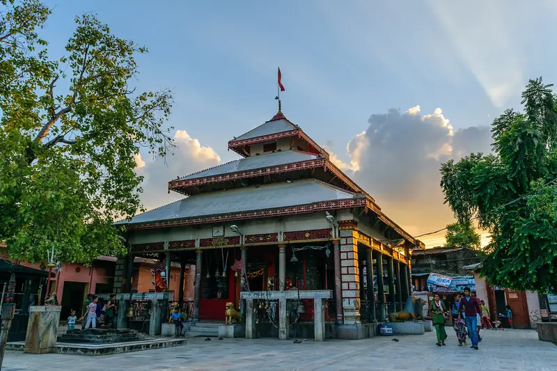

Heart of the city · Ward 2
Bageshwori Mandir बागेश्वरी मन्दिर
The principal Hindu shrine of Nepalgunj, often called the oldest temple in Banke District, is dedicated to Goddess Bageshwori — a form of Durga / Bhagwati associated with speech. A widely told origin story says Sati Devi's tongue fell here, a Shakti Pitha tradition.
The pagoda-style complex has a pond (home to Junge Mahadev) and smaller shrines — Ganesh, an older Bajrangbali (Hanuman) shrine, and a Buddhist gumba. Its image has appeared on Nepali one-rupee coins and postage stamps. Tuesdays and Saturdays are busiest; Dashain draws the biggest crowds of the year.